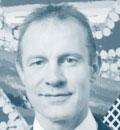

Ce qui distingue une avocate ou un avocat spécialiste
Afin de faciliter aux justiciables la recherche d’un conseil juridique qualifié, la Fédération Suisse des Avocats FSA a introduit, en 2006, avec le titre d’«Avocate / Avocat spécialiste FSA», un nouveau label de qualité, et ce dans les domaines du droit du travail, du droit des successions, du droit de la construction et de l’immobilier, du droit de la famille ainsi que de la responsabilité civile et du droit des assurances.

Le titre «Avocate / Avocat spécialiste FSA droit du travail» ne peut être obtenu que par celle ou celui qui remplit des conditions déterminées. Outre une expérience supérieure à la moyenne en matière de droit du travail et une expérience professionnelle de plusieurs années en qualité d’avocate ou d’avocat, il est nécessaire d’accomplir une formation continue intense et axée sur la pratique, suivie d‘un examen écrit ainsi qu’un colloque. Suite à l‘obtention du titre, les avocates et les avocats spécialistes doivent se soumettre, au surplus, à un perfectionnement régulier.
 Avocates / AvocatsTrouver un avocat202 avocates et avocats spécialistes dans 17 cantons
Avocates / AvocatsTrouver un avocat202 avocates et avocats spécialistes dans 17 cantons

Avocates et avocats spécialistes FSA en droit du travail
Les avantages pour la cliente et le client
Les clientes et les clients confronté(e)s à des questions juridiques complexes tirent un grand profit de la compétence accrue, car les avocates et avocats spécialistes, grâce à leurs connaissances spécifiques, peuvent souvent mettre en œuvre les exigences de la clientèle avec davantage de célérité et d’effectivité.
Un savoir étendu et une grande expérience
Les avocates et avocats spécialistes demeurent toutefois des généralistes et prennent en charge toutes les tâches inhérentes à une avocate ou un avocat, car ils continuent à disposer d’un savoir étendu et d’une grande expérience dans le système juridique suisse. En dépit de leur spécialisation, ils peuvent ainsi fournir aux justiciables des conseils compétents et complets dans toutes les autres disciplines.
Des spécialistes dans toute la Suisse
 Meyer Thomas M. lic.iur.Meyer & WipfZürich · ZH
Meyer Thomas M. lic.iur.Meyer & WipfZürich · ZH Geel Gian lic. iur., LL.M.Reichenbach Rechtsanwälte AGZürich · ZH
Geel Gian lic. iur., LL.M.Reichenbach Rechtsanwälte AGZürich · ZH Raess-Eichenberger Susanne Dr. iur.Nötzli Raess Bächtold RechtsanwälteZürich · ZH
Raess-Eichenberger Susanne Dr. iur.Nötzli Raess Bächtold RechtsanwälteZürich · ZH Binder ErichBinder Sutter Mumenthaler WigetZürich · ZH
Binder ErichBinder Sutter Mumenthaler WigetZürich · ZH Bächtold Rahel lic. iur.Nötzli Raess Bächtold RechtsanwälteZürich · ZH
Bächtold Rahel lic. iur.Nötzli Raess Bächtold RechtsanwälteZürich · ZH Chavanne Michelr & associés, avocatsLausanne · VD
Chavanne Michelr & associés, avocatsLausanne · VD
Nötzli Harry F. Dr. iur.Nötzli Raess Bächtold RechtsanwälteZürich · ZH Bonard AlineCBWM & AssociésLausanne · VD
Bonard AlineCBWM & AssociésLausanne · VD Wyler RémyCBWM & AssociésLausanne · VD
Wyler RémyCBWM & AssociésLausanne · VD Heller Heinz Dr.iur.Heller Rechtsanwälte AGZürich · ZH
Heller Heinz Dr.iur.Heller Rechtsanwälte AGZürich · ZHDomaines d’activité
Les avocates et avocats spécialistes vous conseillent dans tous les domaines ou dans certains secteurs du droit du travail, notamment dans ceux portant sur:
Domaines d’activité- le droit privé du travail (contrat individuel de travail)
- le droit collectif du travail (conventions collectives de travail)
- le droit public du travail (règles applicables de la fonction publique)
- le droit international du travail et les règles applicables aux étrangers
- la protection de l'employé et les droits de participation
- les règles applicables à l’égalité entre hommes et femmes
 Bâtiment du Tribunal fédéral à Lausanne
Bâtiment du Tribunal fédéral à LausannePar canton
202 avocates et avocats spécialistes dans 17 cantons